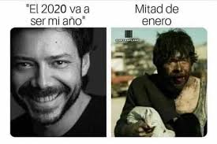
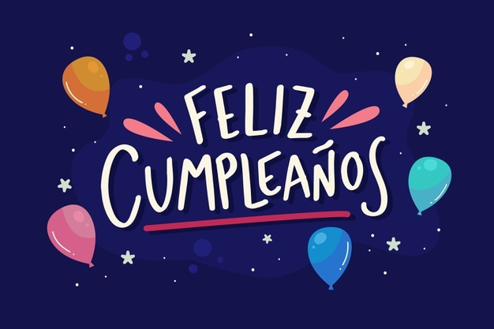

Pues holis :V. Feliz cumpleaños Karnal. Como no supe que regalarte y pues ya ves pandemia, decidi crearte una página web para felicitarte. Dime quien más te ha hecho una XD, dime para ir a tirarsela xd. Eres la segunda persona en mi vida a la que le he creado un sitio web para decirle algo. Tu sabes quien es la primera, pero no hablare de eso jajajaj. En fin, sientete especial :V.
Mira, yo no sé tu, pero al menos yo no te traigo las mañanitas, te traigo las nochecitas, mi papá de vez en cuando la canta nada más por fastidiar a mi madre y de vez en cuando nadamas para jugar jajaja, pero es una bonita canción, siempre me acuerdo de mi padre cuando la escucho y el no esta.
La verdad no quiero decir lo que ya sabes, por que de igual forma se que estas conciente de que cuentas conmigo en lo que sea, eres un buen amigo, algo loco xd, pero meh, yo tambien estoy desquiciado en algunas cosas, un par de locos más en el mundo, que se le va hacer.
Se que este ha sido un año medio raro, de hecho a ti si te queda el meme de:

Tu sabes, me acorde de tu video de fin de año diciendo esa frase y cuando empezaron los memes me acorde de ti jajaja. Pero bueno, las cosas pasan por algo. He independientemente de todo, yo se eso no te detiene, tienes muchas habilidades, trucos y capacidades, que no las explotes es otra cosa, pero se que de alguna forma u otra este terminara siendo si o si un buen año para ti. Yo solo espero poder terminar la carrera por lo pronto jajaja.
En fin rona, espero que pases muy bien tu día a como sea posible, deseo de todo corazón que estes bien y que lo que sea que desees en la vida (y en tu cumple) se haga realidad, y pues que cumplas tantos años como desees vivir (si te haces cybor me dices :v), y pues:

Atte: Ambrocio Isaias Laureano Castro